从密集撞击坑与玄武岩月海，到破裂冰壳与硫黄火山沉积。原图不带球面光照、不叠加大气云层；下方两张球面展示不同经度，帮助检查表面分布。
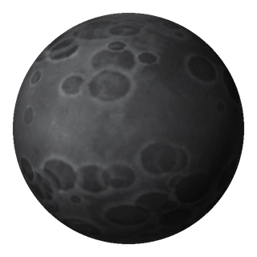
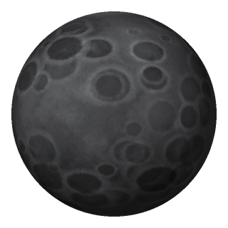
密集撞击坑、明暗相间的灰色岩质高地。
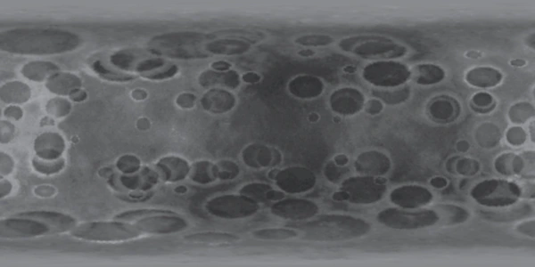
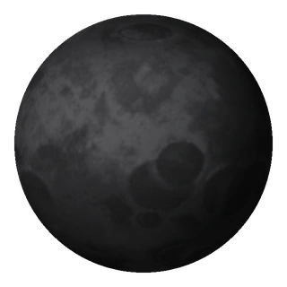
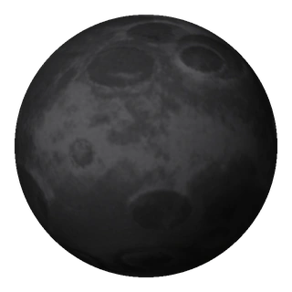
暗色玄武岩平原与较明亮的古老高地，撞击坑较稀疏。
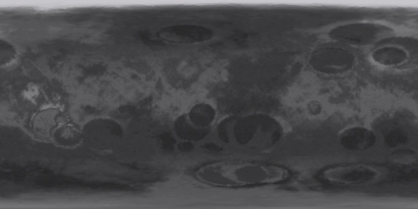
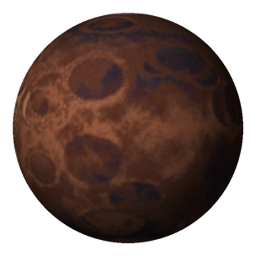
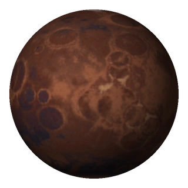
赤褐色矿物岩壳与大小交叠的陨石坑。
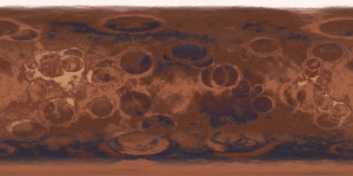
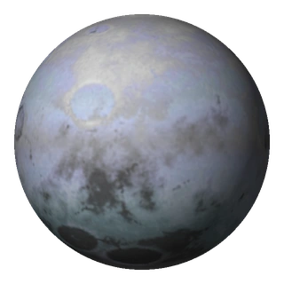
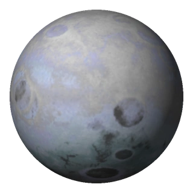
浅色冰壳、长裂谷与少量古老撞击盆地。
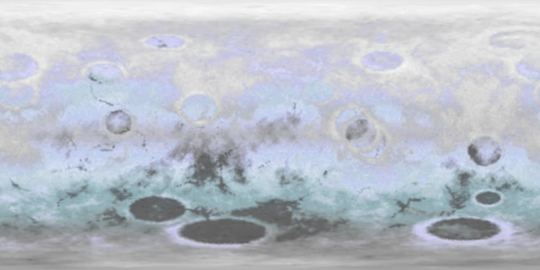
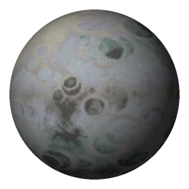
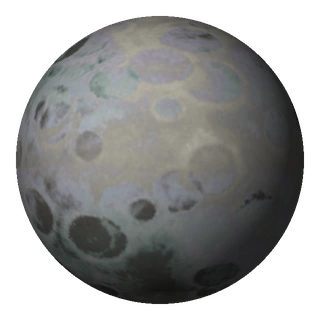
被尘埃和岩质沉积染暗的冰层，保留密集古坑与较少裂谷。
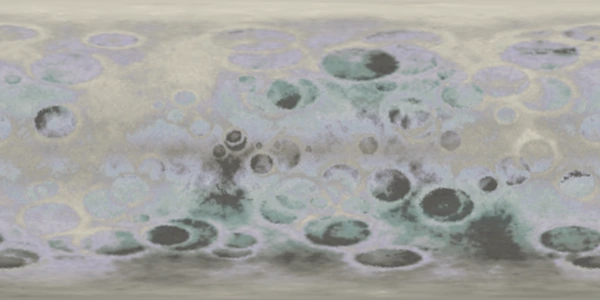
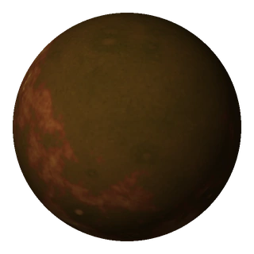
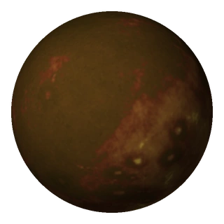
硫黄色沉积、橙褐喷发区与稀疏火山口，无大气云层。
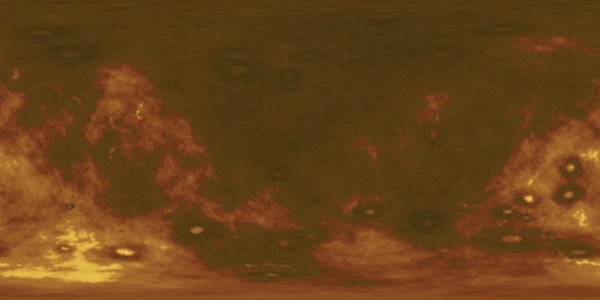